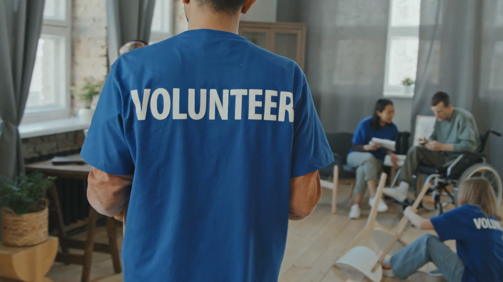

Our Mission
At Volunteer.io, our mission is to connect people through opportunities to serve. We believe that service is one of the best ways to give back to our communities and improve the lives of those around us. Everyone has the responsibilty to serve others, and Volunteer.io makes it easy by connecting you with local businesses and organizations that are sponsoring these service projects. By spending some of your time volunteering with Volunteer.io, we promise that you will feel increased satisfaction in your own life, and you will dramatically change the lives of others for the better. What's there to lose? Register for a project that interests you today!